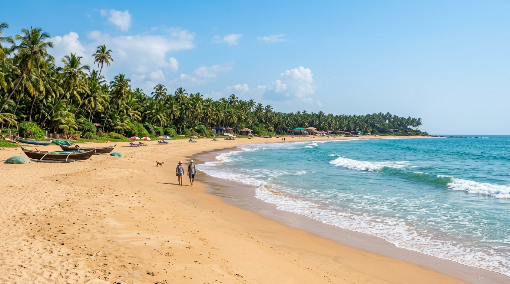
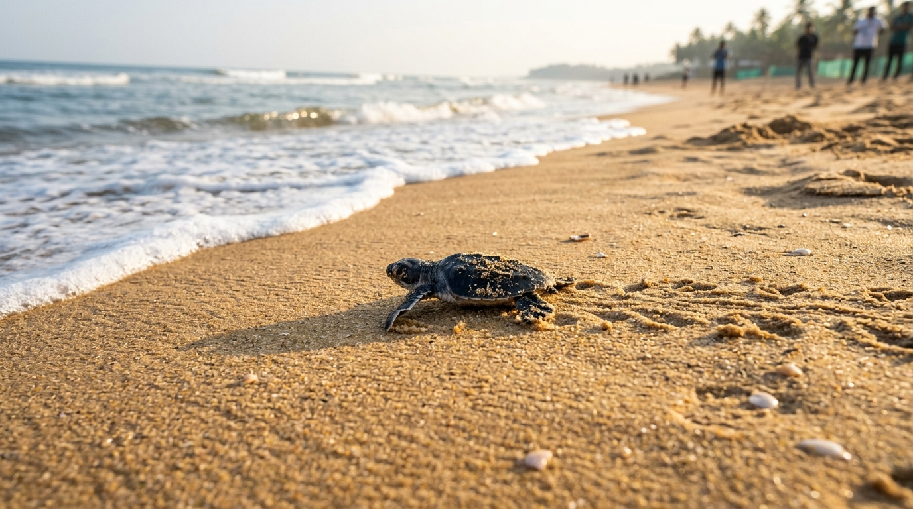
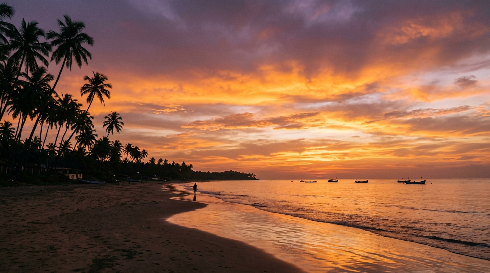
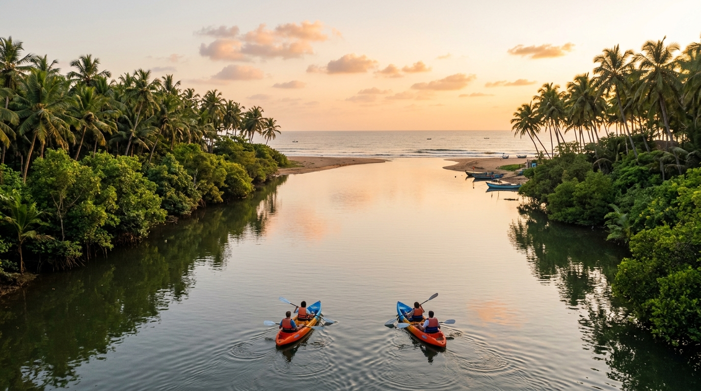

Agonda Beach
South Goa's Pristine Coastal Landscape & Ecological Sanctuary
Tucked away in the serene taluka of Canacona in South Goa, Agonda Beach is a breathtaking 3-kilometer crescent of untouched golden-white sand. Free from acoustic pollution, motorized water sports, and commercial nightlife, Agonda stands as one of India's premier peaceful beach destinations and a vital protected nesting ground for endangered Olive Ridley sea turtles.
📍 Location & Geographical Profile
Agonda Beach is situated along the Arabian Sea in the Canacona region of South Goa, approximately 37 kilometers south of Margao and 70 kilometers from Dabolim International Airport (GOI). It forms an expansive, wide shoreline framed by two dramatic rocky headlands at its northern and southern tips.
| Administrative Region | Canacona Taluka, South Goa District, Goa, India |
|---|---|
| Geographical Coordinates | 15.0444° N, 74.0470° E |
| Coastline Terrain | Wide crescent of golden-white fine sand with a gentle slope and soft foreshore breaker zones. |
| Northern Boundary | Agonda River Estuary, where calm backwaters merge into the Arabian Sea. |
| Southern Boundary | Rocky bluff headland adorned with natural boulder formations and coastal lookouts. |
🏖️ Beach Description & Landscape
- Unblemished Golden Sands: Agonda's wide, soft foreshore provides ample room for peaceful walks, meditation, and beachcombing without overcrowding.
- Tranquil Coastal Vibe: Unlike North Goa's bustling commercial hubs, Agonda enforces strict acoustic standards with no loud commercial shacks or motorized water scooters.
- Natural Canopy Shade: High tide lines are bordered by towering coconut palms, casuarina trees, and lush tropical vegetation providing natural cooling.
- Pure Arabian Sea Waters: Clean, clear ocean swells make it a picturesque destination for safe wading during regulated flag conditions.
🌿 Natural Surroundings & Ecosystem
- Olive Ridley Turtle Sanctuary: Designated by the Forest Department as a critical nesting zone. Female sea turtles return annually between November and April to lay eggs.
- Eco Hatchery & Conservation: Local conservationists protect nest sites from predators, lighting, and human disturbance until hatchlings safely reach the ocean.
- Agonda River Estuary: A calm brackish backwater ecosystem at the northern end home to kingfishers, egrets, white-bellied sea eagles, and dense mangroves.
- Marine Life & Wildlife: Playful Indo-Pacific humpback dolphins are frequently spotted leaping offshore during early morning boat rides.
Agonda Interactive Explorer Hub
Explore detailed guides, seasonal conservation rules, activity maps, and visitor advisories.
Strict eco-protection protocol is active. Artificial beach lighting is restricted after sunset.
Olive Ridley Sea Turtle Conservation Program
Agonda Beach is one of only four designated sea turtle nesting sites in Goa (alongside Morjim, Mandrem, and Galgibaga). Under the Goan Forest Department's wildlife wing, dedicated local turtle wardens monitor the beach 24/7 during the nesting window.
- Nesting Protocol: When a female turtle emerges from the sea, wardens safeguard her path and enclose the egg pit with protective fencing.
- Hatchery Care: Eggs incubate for approximately 45–50 days in natural sand pits before tiny hatchlings emerge.
- Night Regulations: Bright spotlights, flash photography, fires, and loud noise are strictly prohibited on the beach at night to prevent disorienting hatchlings.
Recommended Visitor Activities
Agonda offers mindful, eco-conscious experiences focused on nature, wellness, and sea relaxation:
- Estuary Kayaking & Paddleboarding: Rent a kayak to explore the quiet Agonda River backwaters, navigating through mangrove channels populated by birdlife.
- Morning Dolphin Cruises: Take a traditional wooden boat ride into the bay at sunrise to watch dolphins swimming in their natural marine habitat.
- Yoga & Wellness Retreats: Join beachfront yoga shalas and meditation centers offering daily drop-in classes, Ayurvedic therapies, and sound healing.
- Swimming & Bodysurfing: Enjoy refreshing swims in designated safe zones monitored by professional Drishti lifeguards.
- Sunset Beachcombing: Take long evening strolls along the 3 km shoreline to watch spectacular saffron and violet sunsets over the Arabian Sea.
Nearby Excursions & Attractions
- Palolem Beach (8 km South): A famous crescent bay featuring lively beach shacks, kayaking, and Silent Noise headphone parties.
- Cola Beach & Lagoon (9 km North): A hidden gem with a serene freshwater river lagoon separated from ocean waves by a natural sandbar.
- Cabo de Rama Fort (15 km North): An ancient Portuguese fort standing on a cliff edge with panoramic vistas of the coastline.
- Butterfly Beach (6 km South): A secluded cove accessible via boat ride or forest trek, renowned for colorful butterflies and snorkeling.
- Partagal Matha Monastery (15 km East): A historic 500-year-old spiritual monastery on the banks of the Kushavati River featuring an ancient banyan tree.
Essential Visitor Guidelines & Practical Info
- Best Time to Visit: November through March offers warm sunny days, gentle seas, operating eco-shacks, and active turtle nesting.
- Monsoon Note (June–September): High surf and heavy rains cause beach shacks to dismantle; swimming is strictly prohibited due to dangerous rip tides.
- Lifeguard Safety Flags: Always observe life-saving safety flags (Green = Safe zone, Red = Swimming prohibited).
- Eco Code: Carry out all trash, avoid single-use plastics, and respect turtle nesting enclosures.
- How to Reach: Rent a scooter or hire a taxi from Canacona Railway Station (9 km) or Margao Station (37 km). Dabolim Airport is ~70 km north.
Agonda Visual Gallery



